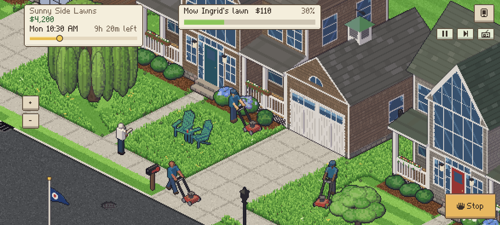
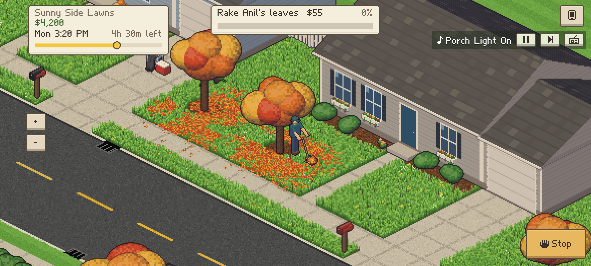
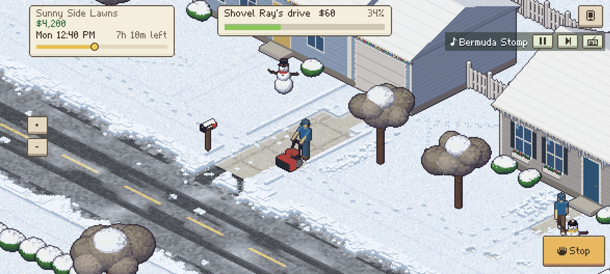
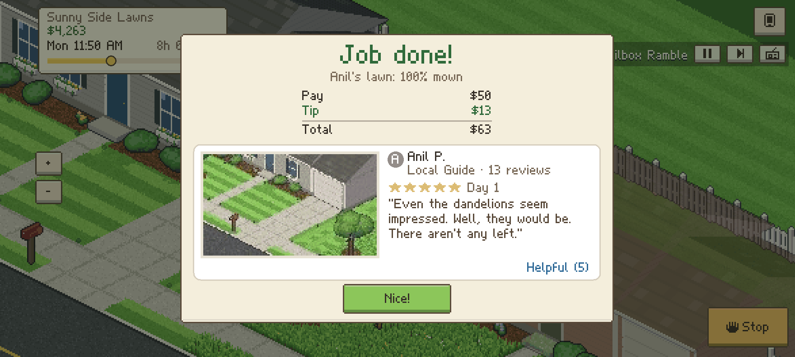
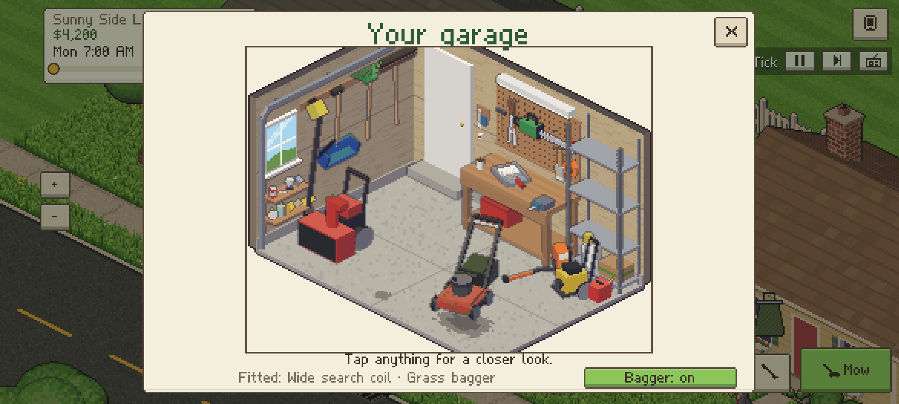

Start with a hand-me-down push mower and the lawns on your own street. The phone rings, a neighbor needs their lawn done, and off you go: mow it in neat stripes, trim the edges, sweep up, and collect your pay and a review. Then grow, one tidy yard at a time, into the busiest lawn care company in town.
Take the call
Customers ring your phone with jobs: lawns to mow, drives to wash, fences to paint, leaves to rake and snow to shovel.
Do it neat
Every pass lays down its own stripe, and the mower keeps to its lane, so the stripes come out straight. Trim, sweep, and earn five stars.
Grow
Hire a crew, buy better gear and a fleet of trucks, and open new places across town, from the lake to the vineyard.




A whole town to look after
- Four seasons of work: mow, power wash drives, paint fences and shape bushes in spring and summer; rake and blow leaves in the fall; shovel and snowblow drives in winter, and brush the snow off a snowed-in car.
- A crew of your own: three new applicants every day, each with their own skills, quirks and wage. Hire them, train them, follow them about, or send them across town.
- Gear and trucks: four mowers up to a zero-turn, leaf blowers, snowblowers and a pressure washer from Hank's Hardware, and five trucks to paint in your colors with your logo on the doors.
- Eight places to work: Maple Street, Birchwood Heights, Pinecone Court, Lakeside Estates, Juniper Commons, the Fairway Glen Country Club, Honeycrisp Hollow and Vine & Dandy Vineyards.
- Found in the grass: a metal detector turns up 144 things as you mow, ordinary to legendary, to keep on your garage shelf or sell.
- A neighborhood that's alive: squirrels, robins and fireflies, neighbors walking their dogs, kids in the snow, and trash day's raccoons.
- Your own radio: eight stations and 104 original songs, from easy listening and country to lo-fi, reggae and vaporwave.
- Idle mode: set the phone down and it plays for you.
- Twelve languages, a text size that suits you, your own currency and clock, and touch, keyboard or gamepad.
- Plays offline. No ads, no accounts, nothing collected.

Free to play
Curb Appeal is free, with no ads and no accounts. It plays offline, and your companies are saved on your device.